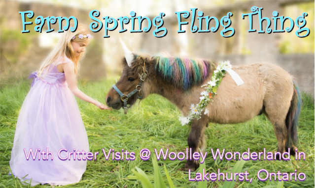
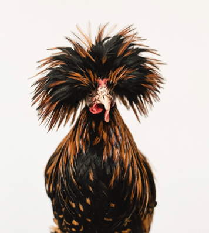
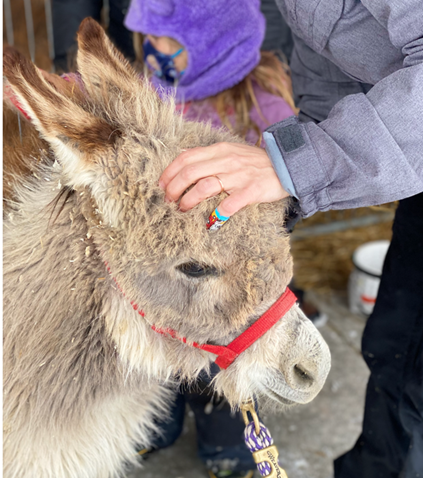

All about
The spring fling
The spring fling


A Farm Spring Fling Thing
 Weekends including Spring holidays (Passover, Easter, School Break) Woolley Wonderland is open for one-hour escorted animal visits including spring babies and our Fantasy Farm Friends Everyone is excited for the warmth of spring. Animals have been arriving, hatching and being born all March. It's time for you to meet some of them with your family bubble. Escorted tours are one-hour and will include 15-minute stops at our Baby Critter Zone, Unicorn Photos with Fantasy Farm Friends, Through-The-Fence Visit & Pony Grooming PLUS our Full Farm Friends interactive area. Rain or shine, we have dry spots to meet and greet our animals. We will be mostly outside, so dress for the weather with BOOTS highly suggested due to MUD SEASON. Animals you get to meet include: alpacas, geese, ducks and ducklings, chicks and funky chickens, guinea hens, mini cows, baby cows, goats and kids, sheep and lambs, mama and baby donkey, friendly cats, pot belly piglets, giant rabbit and small bunny friends too.
Our unique Critter Visits way is to let you get close to meet and greet, touch and hold our farm friends. Our Critter Buddy escort will be on hand to assist in handling, to answer questions and to keep your group together with our Covid protocols in place. All ages welcome. Health protocols and recommendations are found on THIS LINK.
Special Spring Break Programming
 Stories and Songs Join Moppet Karen for 20 minutes of themed animal stories, songs and fingerplays followed by 20 minutes of Mini Farm Friend time with Moppet Fiona. Family/Friend bubbles are welcome to book each appointment. Moppet favourite songs and requests? Be sure to ask Karen for this sing-along time. Music For Moppets was a local playgroup developed and hosted by Karen in the Peterborough area for over 15 years. Moppet CD's @$15 are available at this session! The Moppet program retired in 2019. This is a pop up treat!FEES: $50 per booking for up to 2 vehicles / up to 6 guests within your family/friend bubble
Searching Availability...
 Goat Yoga
Goat YogaYoga Specialists are joyfully pleased to host 30-minute sessions of serious yoga with the tiny goatlets leaping about "helping" you hold that pose! You'll need clothes for the weather (you'll be in a covered area, but outside), a yoga mat that you are ok to wash when done (the dollar store has some), and we'll supply the "jumpers of joy". You'll set up on a bed of straw in an enclosed area so the goats can't sneak off.
LIMITED times. Book online! AFTERNOONS @ 1pm, 2pm, 3pm Fees: $100 group size of up to six guests (within YOUR bubble only) 5-minute goat introductions prior to Yoga plus 10 minutes of photos & poses at the end. All ages welcome to participate. Instructor: Jennifer Watson Monday Sian Wilson Tuesday & Thursday Instructors on other days: to be announced.
Searching Availability...
Snacks Available
Packages of Farm Fresh Animal Cookies @$5
Coffee @$2
Water @$1
Juice Boxes @$1
Sports Beverage @$3
You are welcome to bring your vegetable scraps for our feeding times. Our animals appreciate it. Regrettably, clients may not feed our animals. Thank-you
Porta-Potty and Handwashing on-site
© Critter Visits of Woolley Wonderland Farm Inc. 2020